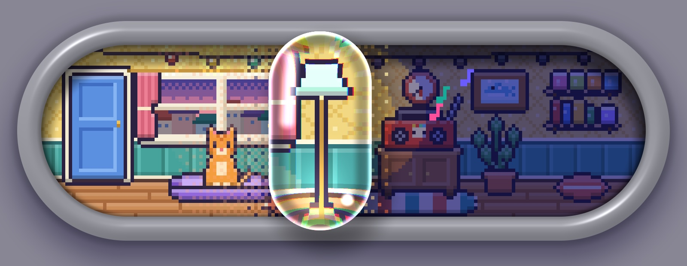

Material StudiesWebGL + Web Audio · single-file pages
Material Studies.
A series of small, self-contained web studies. Open one, or copy the prompt that made it.
A series of small, self-contained web studies. Open one, or copy the prompt that made it.